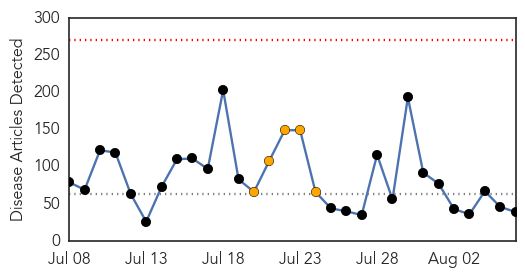
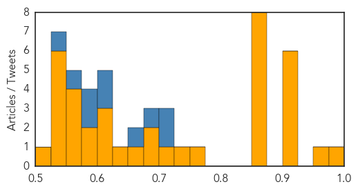

Yellow Fever
30-Day Web Trend
0 alerts, 0 warnings
30-Day Twitter Trend
0 alerts, 0 warnings

Article Locations

Article Confidences

Top Articles:
-
No articles found for Aug 06, 2014
Top Tweets:
-
No tweets found for Aug 06, 2014
Unknown
30-Day Web Trend
0 alerts, 5 warnings

30-Day Twitter Trend
5 alerts, 0 warnings

Article Locations

Article Confidences
Top Articles:
- 0.995
- Ukiah hotel being examined as likely cause for 3 Legionnaires' cases
- 0.959
- Second case of swine fever detected in Lithuania
- 0.917
- Chicago Tribune
- 0.917
- Chicago Tribune
- 0.917
- Chicago Tribune
- 0.917
- Chicago Tribune
- 0.910
- The world windows to Thailand
- 0.904
- Oh deer: In fighting Lyme disease, are we watching the wrong mammals?
- 0.871
- Study shows herpes zoster vaccine remains effective in protecting older adults against shingles after chemotherapy
- 0.866
- Two Italian aid workers kidnapped in Syria
- 0.866
- Putin orders agricultural import bans in sanction retaliation
- 0.866
- Maliki warns against interference in forming of new Iraq government
- 0.866
- Thailand's King Bhumibol Adulyadej to return to hospital
- 0.866
- China bans beards, veils from Xinjiang city's buses in security bid
- 0.866
- Man leaves a local hardware store with screen doors to prepare his house as a hurricane and a tropical storm approach the Hawaiian islands, in Mililani, Hawaii
- 0.860
- Poor sanitation, poverty behind Swazi diarrhoea outbreak
- 0.757
- Lake Erie harmful algae bloom threatens drinking water supplies
- 0.728
- Rosetta space probe makes historic rendezvous with comet
- 0.722
- Boulder Medical Center Joins CORHIO Health Information Exchange, Enhancing Care Coordination For Area Patients
- 0.693
- Poland, Baltics Agree Measures to Combat ASF
- 0.688
- Experimental non-invasive tests detect rare brain disease
- 0.652
- NorthShore Health Centers Celebrates National Health Center Week 2014
- 0.636
- Pupils taken ill in Tuberculosis outbreak at Beckton school
- 0.616
- New Methods May Make CJD Testing Easier
- 0.611
- NATO warns of invasion by Russian 'peacekeepers'
- 0.601
- Obama vows to boost security ties at close of US-Africa talks
- 0.591
- Mamata's government on the back foot over poor healthcare facilities as encephalitis deaths hit 155
- 0.581
- Episode 2: 'Politics and the AKP in Turkey'
- 0.574
- 8 sick? E. coli O157:H7 confirmed at Minnesota fair
- 0.570
- City offers bounties for dead rats
- 0.564
- Kerry calls for two-state solution as fragile Gaza truce holds
- 0.557
- Karachi’s water has ‘insufficient’ chlorine
- 0.549
- Liberia declares state of emergency as Ebola toll rises
- 0.549
- Common tuberculosis vaccine can be used to prevent infection as well as disease
- 0.542
- Kurds unite in bid to rescue Iraq's Yazidi minority
- 0.530
- Saudi Arabia gives Lebanon $1 billion to fight jihadists
- 0.530
- Israel ready to 'extend Gaza truce unconditionally’
- 0.526
- Drug-resistant malaria a growing threat
- 0.502
- Update - Access to specialty health care out of reach for low-income patients
Top Tweets:
- 0.718
- RT: .@AinaDiazV cómo se propaga la malaria? Y el ébola? Ay madre que te has metido en un berenjenal...
- 0.703
- RT: [[ElianThemonster]] Un tratamiento preventivo mensual con una combinación de fármacos reduce la malaria en niños: El... [[Ha…
- 0.684
- RT: Salud Indica En La Sanidad están confirmados 5 casos de malaria procedentes de Naiguatá según se conoció…
- 0.653
- RT: @aelito_mio El ébola ha matado a menos personas en 40 años que el SIDA o la Malaria en un solo día.
- 0.623
- RT: Claro como en africa mueren de malaria nadie salta.
- 0.619
- RT: Al fin Veracruz terminó con la malaria de no vencer a en más de cinco juegos.. @ClubTiburones
- 0.589
- RT: UHHHHH mosquito vector de la MALARIA en Tarapacá? Eso va a traer problemas para la Fiesta? Iquique
- 0.589
- RT: Más de 3.000 personas mueren al dia por Malaria en África. No le quito importancia al Ébola por supuesto pero un poquito de…
- 0.571
- RT: Mueren dos americanos de ébola y ya pasa a ser la Belen Esteban de los virus sin embargo de malaría mueren 250.000 al año y n…
- 0.531
- RT: @xavieraldekoa el SIDA la malaria y la desnutrición no preocupan en los países avanzados... Eso es de pobres y d…